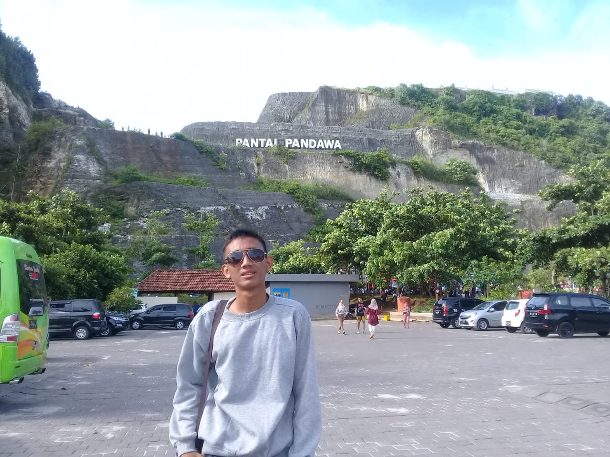

Aldi Febriansyah

Tentang saya
Saya Aldi Febriansyah biasa dipanggil Aldi lahir di Cilacap pada 19 Februari 2021. Saya merupakan mahasiswa semester 5 program studi Administrasi Publik Universitas Negeri Yogyakarta. saya suka bermain game, menonton anime dan juga suka kamu. saya memiliki cita-cita untuk bisa memberangkatkan orang tua naik haji, memiliki rumah sendiri dan bisa menjadi seorang manajer.
Riwayat Pendidikan
2008-2014 : SDN Sindangsai 01
2014-2017 : SMPN 1 Majenang
2017-2020 : MAN 02 Cilacap
2020-sekarang: S1-Administrasi Publik
Pengalaman organisai
2021-sekarang:Staff Divisi Personalia LPM Philosofis
2021-sekarang:Ketua Komunitas Olahraga Kopma UNY
2022-sekarang:Kadiv Akademik Organisasi Mahasiswa Daerah Cilacap
Kemampuan
problem solving
membangun relasi
manajemen waktu
jangan lupa berteman
@whereami19_